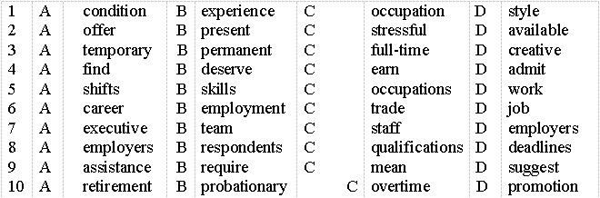
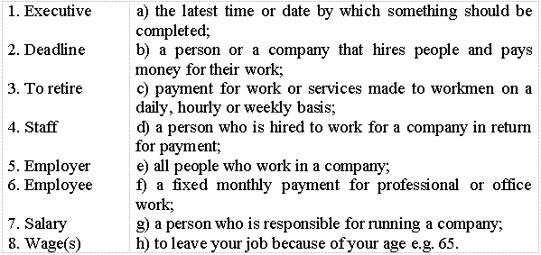

Lesson 20
UNIT 5
Employment and interview
BASIC EMPLOYMENT
Employment. Job hunting
Learn the active vocabulary of the Lesson and be ready to
use it in your further work:
Job
hunting – пошук роботи; turning
point – зворотній пункт/момент;
regardless
– не залежно від; voluntarily
adv – добровільно,
за власним бажанням; resume
n – резюме; take
into account (took, taken) – брати до уваги; consider v – розглядати, обговорювати; вважати; skills
n – навички; put
your skills and talents to their best use – використовувати свої вміння
найкращим чином; weed
out v – очистити; responsibility
adv – відповідати (за щось); pleasure n – задоволення; temphasize
v – надавати особливого значення; truly
adv – правдиво, безперечно; enjoy
v – любити (про справу); gather
v – збиратись;
draw
on (drew, drawn) v – викликати (діяти); slant
v – ухилятись; involve
v – затягувати;
commit
v – здійснювати; accomplishment
n – виконання; hinder v – заважати, робити перепони; accept
v – приймати до уваги. Read
and translate the text:
JOB
HUNTING Job
hunting is a turning point in your life, regardless of whether or not you are
doing it voluntarily. Getting ready to write your resume is the stage when you
take into account who you are and where you hope to go. The most important step
in writing your resume is the preparation. In the planning stage, you carefully
consider what new directions you can take or how you can put your skills and
talents to their best use. It is time to weed out those job responsibilities in
which you take little pleasure and to think of ways to emphasize the tasks you
truly enjoy. It is also a time to gather enough basic material about yourself so
that you can draw on the information to write any number of resumes slanted to
various job possibilities. The
first step in the self-analysis and preparing your resume involves the gathering
of facts. Although much of this information may seem too elementary to write
down, committing it to paper makes you think about your accomplishments, as well
as your strengths and weaknesses, and how they will help or hinder you on any
job you accept. Such
soul-searching is not pure self-indulgence. It will help you sort out the kind
of job you want and the kind of job you might best avoid, either because you
will not be happy doing it or because you won' t do it especially
well. The
work sheet of your resume should combine a mixture of questions: some will
uncover basic facts about yourself; others will help you to think about your job
needs, wants, and capacities. Several
of the questions will never make it to the final form of your resume. They are
important, however, because they will contribute to the tone and attitude of
your resume. Think
carefully before you answer these questions and create your resume. Make your
answers as honest as possible. This work sheet is your personal property, and no
one else needs ever see what you have written. The
appearance of your resume is enormously important. It depends in large part upon
the type of resume that you write. How your resume looks depends, to some
extent, on the kind of resume you write. GRAMMAR
EXERCISES I.
Answer the following
questions: 1.
Why is job hunting a turning point in your life? Explain your
answer. 2.
What is the most important step in writing a resume? 3.
What is the planning stage of writing your resume? 4.
What is the first step in the self-analysis and preparing your
resume? 5.
What questions should the work sheet of your resume combine? 6.
Why does no one need else ever see what you have written? 7.
Why is the appearance of our resume enormously important? What do you
think? II.
Read the questions and check the meaning of the words in
bold:
1.
Do your parents have 9
to 5 job or
they work flexitime? 2.
Do students take a gap
year before
going to University when they finish school? 3.
Do your parents often work
overtime? 4.
Is their job rewarding?
What are its challenges? 5.
Are there many unemployed people
in your country? 6.
Would you like to work for a company or be self-employed?
Why? 7.
Do you have any work
experience? 8.
What qualifications
do
you need for your future job? 9.
What age do people retire in
your country?
III.
Read the text below and choose the best option from: A, B, C, or
D:
YOUNG
PEOPLE AND EMPLOYMENT Very
often young people get their first work 1)
... at
school. There are various jobs 2)
... for
them: animal caretakers, waiters, shop assistants etc. Usually this is a
3)
... or
part-time job during their school holidays or at weekends. It is a good way to
4)
... some
money and maybe gain some useful 5)
... .
Although it’s tempting to spend your holiday time working and earning money,
it’s not a good idea to forget about your education. Most
young people get a job when they finish their education. And they need to begin
thinking about 6)
... choices
in secondary school. Nowadays 7)
... are
looking for quite a lot in their potential employees. They should have 8)
... ,
an impressive CV and preferably have some relevant work experience. In general,
jobs that 9)
... university
qualifications are usually better paid. Some people stay with the same company
for their entire career; others move around to different jobs with a range of
companies. If you stay with the same company for a long time you may have better
chances to get a/an 10)
... .

IV.
Match the words to their definitions:

V.
Complete the text with the given words:
Nowadays
in many countries around the world there is not enough _________ for every-body
and many people are looking for a _________. If they are lucky enough to find
one it is often___________ (only a few hours a day) not full time, or it is a
_______________ job (only for a few months) not a permanent one. Many jobs
involve working long ___________ and often the working ___________ (e.g. salary,
holidays) are not good. To get a good job, it’s important to have __________
(e.g. a university degree) and some __________.
VI.
Fill in the gaps with the adjectives:
1.
If you want to work in advertising you have to be very ... . 2.
Industrial computers can do ... and time-consuming jobs faster and more
efficiently than people. 3.
This week was very ... for our staff as we had to complete the project before
the deadline. 4.
Teaching is not very financially ... job as they do not get paid a
lot. 5.
Being a firefighter is very ... job as they always have to work in dangerous
situations.
VII.
When
we speak about work we often use such words employment,
job, occupation, profession, trade.
They are synonyms but there is a difference between them. Read the explanation
for these words:
VIII.
Fill in the sentences with the following words:
1.
Dave is looking for a ... . The restaurant where he worked closed
down. 2.
I had to fill out a form with my name, age, address, educational background and
my ... . 3.
She is a nurse by ... . But she works as a shop assistant. 4.
I signed a contract of ... with a new company. 5.
Although he is a gardener by ... , he decided to look for a ... as a taxi
driver. 6.
The ... rate for those who finished a course in this ... is not very
high. 7.
She has always wanted to be an interpreter and now she is the best in her ...
. IX.
Translate the following sentences into English:
1.
Працівники, які працюють в нічну зміну, отримують вищу зарплатню. 2. Коли Майк
був студентом він працював неповний робочий день, щоб оплатити навчання в
коледжі. 3. Багато українців їде на роботу закордон. Зазвичай це тимчасова
робота, однак вона дає гарний заробіток. 4. Він часто запізнювався на роботу і
не виконував свої обов’язки належним чином, тому його звільнили. 5. Після того,
як він запропонував нові способи збільшення прибутків компанії, він отримав
підвищення на посаді. 6. Вона не задоволена своєю новою роботою, оскільки їй
часто доводиться працювати надурочно. 7. В європейських країнах учні часто
беруть “рік відпочинку” перед тим, як посуплять до університету. X. Discuss
the following questions and read the text:
1.
Have you chosen your future profession? What is it? 2.
Which factors influence your choice of future profession (if necessary add your
ideas): • high salary • helping other
people • opportunity to
travel • fame 10
TOP PRESTIGIOUS JOBS IN THE US The
Harris Poll is one of the oldest and most popular poll agencies in the world.
For almost 50 years it has analyzed every aspect of American life. Since 1977 it
has been asking Americans about how prestigious they find various
jobs. Clearly,
everyone has their own definition of prestige. But how do Americans define
prestigious work? A quick glance at the latest poll results suggests that it
requires a high level of education or a high level of public
service. According
to the poll, for 88 per cent of respondents doctors have ‘a great deal of’
prestige. As Niall McCarthy from Statista says “Doctor is number 1 in the US due
to financial aspects, as well as social reasons. They are intelligent,
high-earning professionals who help other people a lot. In many situations they
are seen as heroes”. Other prestigious jobs among the top 10 include military
officer, firefighter, police officer, and nurse. As
we can see not many Americans associate prestige with fame or big money – actors
(55%), politician (52%), bankers (38%) and real estate agents (27%) are very low
on this list. It’s
interesting but if we ask parents which jobs they would encourage their children
to choose, the figures are a bit different. In this case, engineers top the list
(93%) with doctors, scientists, nurses and architects coming next. Many parents
would also encourage their children to become teachers (81%), accountants (78%),
firefighters (77%), business executives (74%), lawyers (69%), and military
officers (65%). It seems that ‘most prestigious’ is not always exactly the same
as ‘most employable’.
XI.
For beginnings 1-6 choose the correct ending A-I. There are three options you do
not need to use:
XII.
Do your own survey to define the most prestigious jobs in your
country:
— Ask your parents and at least ten
friends to name the 5 top prestigious jobs in your country. Present the results
of your poll in the class. — Did your respondents name any
profession from the 10 Top American Prestigious Jobs? — Try to explain why your
respondents chose ‘their’ professions.